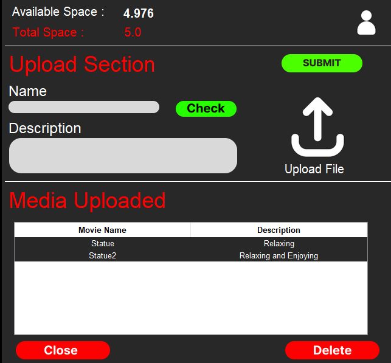

Watch, Stream & Save Your Favorite Scenes Like Never Before
Explore.png)
V-Media Player is built using Python and VLC libraries. It works both locally for downloaded media and on the cloud, allowing users to upload up to 5GB of media and stream directly.
Play downloaded media or stream directly from our 5GB cloud storage.
Save your favorite movie scenes or resume from where you left off.
Your saved timestamps are stored securely on your local device in JSON format.

If you'd like to collaborate or learn more, feel free to reach out.
Get in Touch